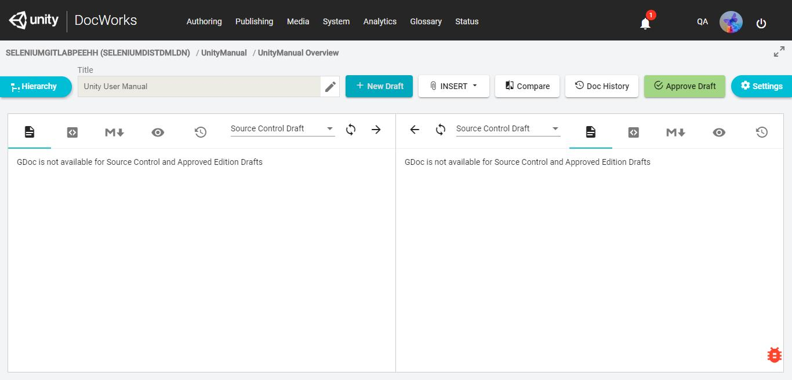
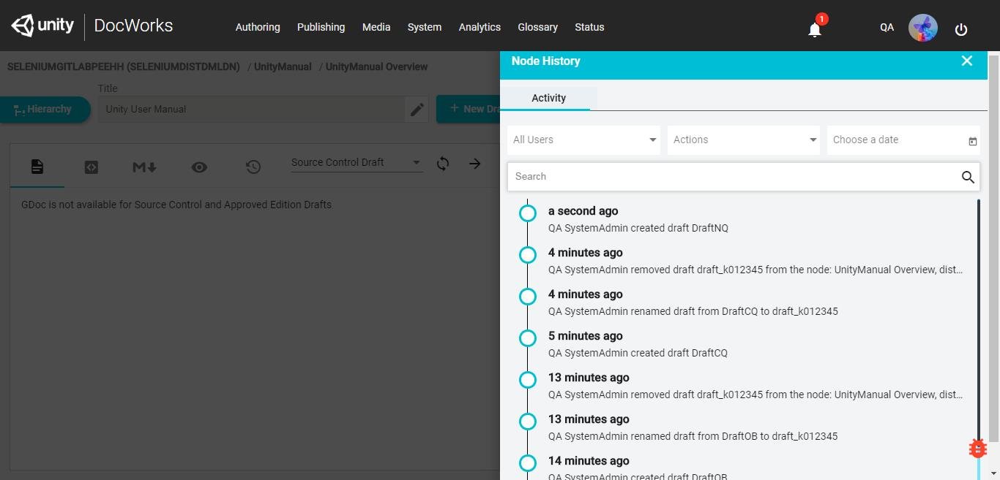
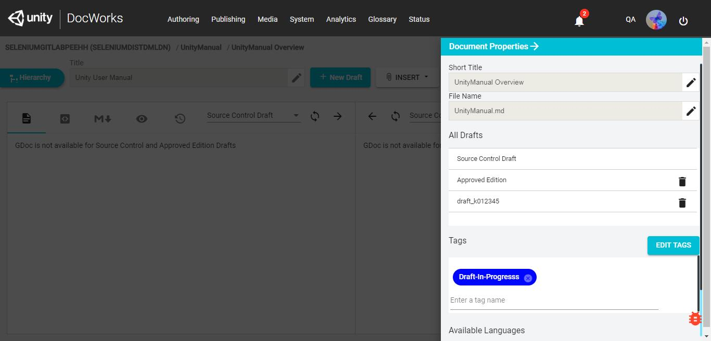
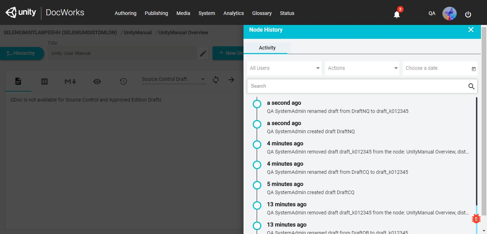
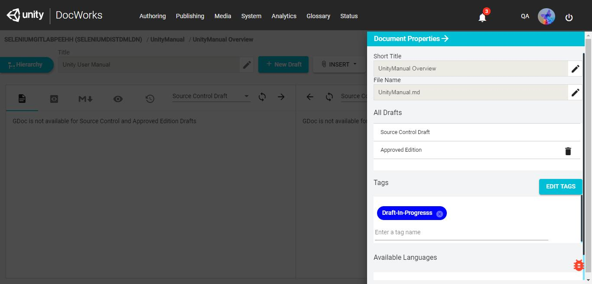
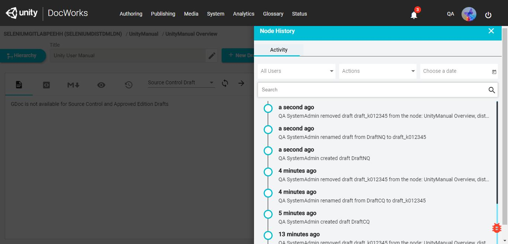

| Status | Timestamp | Details |
|---|---|---|
| info_outline | 28-12-2018 18:21:58 | Entered the Project Name: SELENIUMGITLABPEEHH in search bar |
| info_outline | 28-12-2018 18:22:32 | Clicked on Open Project Button |
| info_outline | 28-12-2018 18:23:08 | Clicked on Unity Manual Node |
| info_outline | 28-12-2018 18:23:17 | Clicked on New Draft Button. |
| info_outline | 28-12-2018 18:23:25 | Draft Name isDraftNQ |
| info_outline | 28-12-2018 18:23:32 | Selected Blank Draft. |
| info_outline | 28-12-2018 18:23:38 | Draft Created Successfully. |
| check_circle | 28-12-2018 18:23:40 | SUCCESS : Blank Draft got Created Successfully |
| info_outline | 28-12-2018 18:23:59 | Clicked on DocHistory Button. |
| info_outline | 28-12-2018 18:24:32 | QA SystemAdmin created draft DraftNQ |
| check_circle | 28-12-2018 18:24:39 | SUCCESS : Created draft history details loaded Successfully |
| check_circle | 28-12-2018 18:24:40 | Expected : [DraftNQ] is available in Actual : [QA SystemAdmin created draft DraftNQ] SUCCESS : Created draft history details loaded Successfully |
| info_outline | 28-12-2018 18:24:46 | Clicked on NodeHistoryCloseButton |
| info_outline | 28-12-2018 18:25:06 | Clicked on Settings Button. |
| info_outline | 28-12-2018 18:25:36 | Clicked on RightMarkToRename |
| check_circle | 28-12-2018 18:25:43 | SUCCESS : Draft Renamed Successfully |
| info_outline | 28-12-2018 18:25:58 | Clicked On BackDrop |
| info_outline | 28-12-2018 18:26:36 | Clicked on DocHistory Button. |
| info_outline | 28-12-2018 18:26:50 | QA SystemAdmin renamed draft from DraftNQ to draft_k012345 |
| check_circle | 28-12-2018 18:26:52 | SUCCESS : Rename draft history details loaded Successfully |
| check_circle | 28-12-2018 18:26:54 | Expected : [draft_k012345] is available in Actual : [QA SystemAdmin renamed draft from DraftNQ to draft_k012345] SUCCESS : Rename draft history details loaded Successfully |
| info_outline | 28-12-2018 18:27:01 | Clicked on NodeHistoryCloseButton |
| info_outline | 28-12-2018 18:27:45 | Clicked on Settings Button. |
| info_outline | 28-12-2018 18:28:07 | Clicked on Delete draft Icon |
| info_outline | 28-12-2018 18:28:17 | Clicked on Delete draft Button |
| check_circle | 28-12-2018 18:28:24 | SUCCESS : Draft Deleted Successfully |
| info_outline | 28-12-2018 18:28:39 | Clicked On BackDrop |
| info_outline | 28-12-2018 18:28:52 | Clicked on DocHistory Button. |
| info_outline | 28-12-2018 18:29:17 | QA SystemAdmin removed draft draft_k012345 from the node: UnityManual Overview, distribution SELENIUMDISTDMLDN |
| check_circle | 28-12-2018 18:29:19 | SUCCESS : Deleted draft history details loaded Successfully |
| check_circle | 28-12-2018 18:29:20 | Expected : [draft_k012345] is available in Actual : [QA SystemAdmin removed draft draft_k012345 from the node: UnityManual Overview, distribution SELENIUMDISTDMLDN] SUCCESS : Deleted draft history details loaded Successfully |
| info_outline | 28-12-2018 18:29:26 | Clicked on NodeHistoryCloseButton |